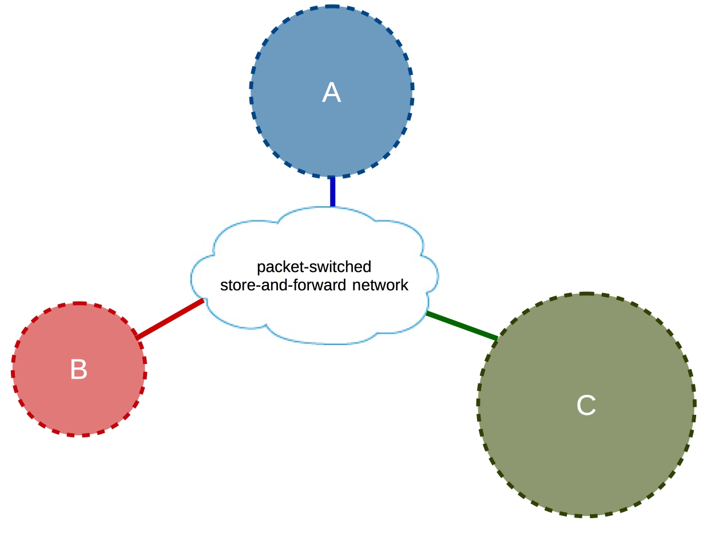

Back-to-Basics: The design philosophy of the DARPA Internet protocols

I’ve always been intrigued by the technologies that have had their start as research projects funded by DARPA. The Internet, in my opinion, is one project that has touched more lives than any other DARPA initiative. I first read this paper as part of my graduate course in computer networking, and it feels good to start right from the paper that got me interested in the area of networked systems. This paper is by David Clark and is one of the seminal papers in computer networking. It discussed about some of the core principles/motivations behind the design of the Internet protocols/architecture.
[ more… ]